I am a software engineering student about to finish his undergraduate.
I am interested in
I am passionate in
Projects

Position Based Fluids Simulation
This is a position based fluids simulation implemented as a module of the Godot game engine. It makes use of nearest neighbors search to estimate density and solve incompressibility constraints.
Miles Macklin and Matthias Müller. 2013. Position based fluids. ACM Trans. Graph. 32, 4, Article 104 (July 2013), 12 pages. DOI:https://doi.org/10.1145/2461912.2461984
Rigid Body Simulation
I implemented a rigid body solver with contacts as part of a master's course on real-time physics simulation. It solves the constraints using a projected Gauss-Seidel iterative solver.
Learning C++
This was a project to challenge myself and learn C++. The project generates random maps using Poisson Disk sampling and Voronoi diagrams. It also uses Dijkstra's algorithm for pathfinding and QML and QT for visualization.
OMAF streaming platform
Capstone project for my Bachelor's degree in Software Engineering. It allows the preparation and upload of 360-3D video content to be streamed by an http server according to the OMAF standard. The source media is encoded in tiles of different formats (fps/resolution) which allows adaptive streaming according to bandwidth capacity and head orientation.
Poisson Disk Sampling in Rust
Poisson Disk Sampling is a technique to generate random points that are guaranteed to be within certains distances of each other to obtain a natural looking distribution. I also implemented this algorithm in C# and C++.
Robert Bridson. 2007. Fast Poisson disk sampling in arbitrary dimensions. In ACM SIGGRAPH 2007 sketches (SIGGRAPH ’07). Association for Computing Machinery, New York, NY, USA, 22–es. DOI:https://doi.org/10.1145/1278780.1278807
Skills
Talking to Computers |
|
|---|---|

|
Solid understanding of C++ thanks to personnal projects [1] and physics simulation courses [2] |

|
Extensive Javascript development experience using modern frameworks such as React [1] and Angular [2] |

|
Multiple work experiences in developping Android applications using Java and a sprinkle of Kotlin |

|
Working knowledge of C# gained through multiple Game Jam experiences |

|
Python is mandatory in machine learning and AI contexts which I was exposed to during my studies |
|  | I gained familiarity with Rust concepts such as Ownership and listening to that borrow checker through a personal project [1] |
Talking to People |
|
| Consumer Interactions | All of my work experience deal directly with consumers and their needs. |
| Multicultural Environment | 8 months of work experience in a Japanese company |
| English and French | Native level |
| Japanese | Advanced intermediate |
Using tools |
|
| Linux | I like tinkering with Linux using my personnal computers and Raspberry Pis. My favorite distribution is Arch Linux. |
| Development | VSCode, Atom, vim, Jetbrain IDEs, QTCreator, Android Studio |
| Unity | Multiple Game jam experiences along with limited VR usage |
About me
I am a software engineering student about to finish his undergraduate. I like overcoming strict
performance and availability challenges and applying my knowledge to interesting fields such as physics
simulation or 3D rendering. I have experience in physics simulation and web based data visualization and
am proficient in a broad range of programming languages. I had an eight month long internship in Tokyo
that really helped me better my interpersonal skills in a diverse team and make my voice heard over the
challenges of communication. In three to five years I would like to have developped advanced skills in
physics simulation, 3D rendering and software optimization to be able to take a leading role in a game
changing project.
If you think I would be a good fit for your company feel free to contact me using the
information on my resume.
Thank you for your interest,
Louis-Simon Mc Nicoll